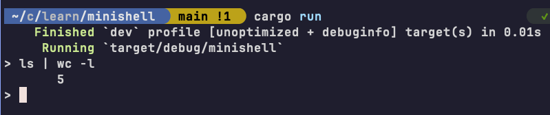
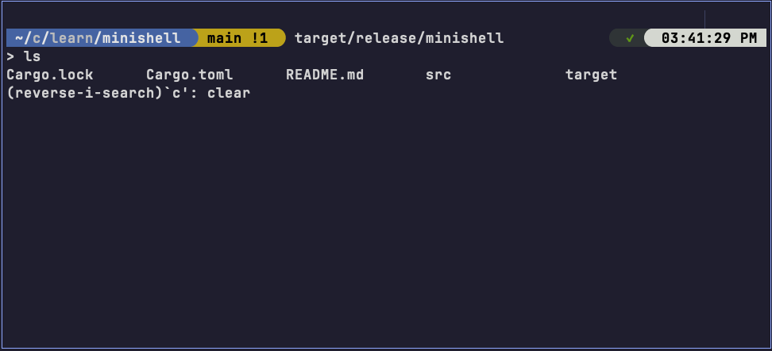
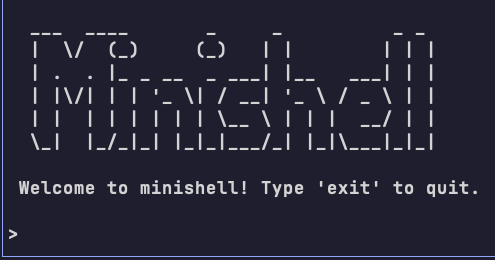

In a little over 100 lines of Rust code, we can build a simple shell program that can execute commands, supports piping, handles signals, and maintains command history. This tutorial will guide you through the process of creating a minimal shell, which we will call "minishell", using Rust's powerful standard library and some external crates.
Table of Contents
What is a Shell?
No doubt you've used a shell before, whether it be the Windows Command Prompt, PowerShell, or a Unix shell like Bash or Zsh. A shell is a command-line interface that lets users interact with their operating system, whether it be file management, starting processes, or something else. The "shell" in a shell program refers to the fact that the shell is a wrapper around the operating system's functionality via the kernel's APIs.
At its core, the lifecycle of a shell can be summarized as follows1:
- Read: The shell reads a command from the user.
- Parse: It parses the command to understand what needs to be done.
- Execute: The shell executes the command, which may involve running a program, executing a script, or performing some other action.
- Output: The shell displays the output of the command to the user.
Recognizing this, we can see that if we want to build a shell, we need a way to continuously prompt the user for input, parse that input, and then hand off the parsed commands to the operating system to execute. With this as our starting point, we can begin building our shell.
Let's first start by creating a new Rust project for our shell:
cargo new minishell
Next, navigate to the main.rs file in the src directory and open it in your
text editor of choice.
Prompting for Input
Since our shell will be a command-line interface, we need to prompt the user
for input and read that input. In Unix-like systems, this is typically done
from the "stdin" (standard input) stream. In Rust, we can make use the std::io
module to read input from the user. Let's start with just a basic loop:
// src/main.rs
use std::io::{self, Write};
fn main() {
loop {
// Print the prompt
print!("> ");
// Ensure prompt is displayed immediately
io::stdout().flush().unwrap();
// Read user input
let mut input = String::new();
match io::stdin().read_line(&mut input) {
Ok(_) => {
let input = input.trim();
// For now, just echo the input
println!("You entered: {}", input);
}
Err(error) => {
eprintln!("Error reading input: {}", error);
break;
}
}
}
}
There are several important things to note here:
- We use
print!instead ofprintln!to avoid a newline after the prompt. - We call
io::stdout().flush()to ensure the prompt is displayed immediately before reading input. Without this, the default buffering behavior may delay the prompt until after the user has entered input, which is not what we want. - We read a line of input from the user using
io::stdin().read_line(). This returns aResultthat either contains the number of bytes read (which we ignore here) or an error.
To run this code, you can use the cargo run command in your terminal:
cd minishell
cargo run
Parsing Input
Alright, so now we can take input from the user, but we need to parse that input into commands that we can execute.
For our basic naive shell, we'll split the input into words separated by whitespace (don't worry, we'll improve this later), where the first word is the command and the remaining words are arguments. Let's update our code to handle this:
// src/main.rs
use std::io::{self, Write};
fn main() {
loop {
print!("> ");
io::stdout().flush().unwrap();
let mut input = String::new();
match io::stdin().read_line(&mut input) {
Ok(_) => {
let input = input.trim();
// skip empty input
if input.is_empty() {
continue;
}
// Parse the input into command and arguments
let mut parts = input.split_whitespace();
let command = parts.next().unwrap();
let args: Vec<&str> = parts.collect();
println!("Command: {}", command);
println!("Arguments: {:?}", args);
}
Err(error) => {
eprintln!("Error reading input: {}", error);
break;
}
}
}
}
Now when we enter a command like ls -la, the shell will parse it into:
Command: ls
Arguments: ["-la"]
Obviously, this is very basic parsing, and it doesn't handle multiple commands and/or piping, but we will fix that later. For now, we have a basic shell that can read input from the user and parse that input into a command and its arguments.
Executing Commands
We now have a basic shell that can read input from the user and parse that input into a sequence of commands that can be executed by spawning new processes. However, not all commands are equally handled by the shell, leading to the need for built-in commands and understanding how shells create processes.
How Shells Create Process
Before we execute commands, I think a little background on how shells create processes is in order. When a shell executes a command, it typically does so by creating a new process, a process being an instance of a running program.
In Unix-like systems, this is done using the fork and exec system calls:
- Fork: The shell creates a new process by duplicating itself using the
forksystem call. This creates a child process that is an exact copy of the parent shell process (this will become important later). - Exec: The shell then replaces the child process's memory space with the
new command using the
execsystem call. This means that the child process is now running the new command, but it still has the same process ID (PID) as the original shell.
As a result, the child process can run independently of the parent shell, and the shell can continue to run and accept new commands. When the child process finishes executing the command, it can return an exit status to the parent shell, which can then display the result to the user.
Even though these details are abstracted away in Rust, they are still important to understand how our shell will work. When we execute a command, we will use the
Commandstruct from thestd::processmodule, which internally handles theforkandexecsystem calls for us. TheCommandstruct provides a convenient way to spawn new processes and pass arguments to them.
Built-in Commands
With this in mind, the method of creating processes necessitates why shells
have built-in commands like cd (change directory) or exit. These commands
must be handled by the shell itself rather than being passed to the
operating system.
Why? Take for example the case of cd. Remember that when we fork a new
process, it is a copy of the parent shell. If we were to exec a command
like cd, it would change the directory of the child process, but once that
child process exits, the parent shell's working directory would remain
unchanged. Thus, the shell must handle cd itself to change its own working
directory. In a similar vein, the exit command must also be handled by the
shell as it needs to terminate the shell process itself, not just a child
process.
Shell Process (Working Directory: /home/user)
|
└── Child Process: `cd /tmp` (Working Directory: /tmp)
[Process exits, directory change is lost]
|
Shell Process (Working Directory: still /home/user!)
Implementing cd and exit Built-in Commands
Let's implement the cd and exit built-in commands in our shell. We'll
add a match arm to handle these commands before we attempt to execute any
external commands. Here's how we can do that:
1 use std::{
2 env,
3 error::Error,
4 io::{stdin, stdout, Write},
5 path::Path,
6 };
7
8 fn main() -> Result<(), Box<dyn Error>> {
9 loop {
10 print!("> ");
11 stdout().flush()?;
12
13 let mut input = String::new();
14 stdin().read_line(&mut input)?;
15 let input = input.trim();
16
17 if input.is_empty() {
18 continue;
19 }
20
21 // Parse the input into command and arguments
22 let mut parts = input.split_whitespace();
23 let Some(command) = parts.next() else {
24 continue;
25 };
26 let args: Vec<&str> = parts.collect();
27
28 // Handle built-in commands first
29 match command {
30 "cd" => {
31 // Handle cd command - must be done by shell itself
32 let new_dir = args.first().unwrap_or(&"/");
33 let root = Path::new(new_dir);
34 if let Err(e) = env::set_current_dir(root) {
35 eprintln!("cd: {}", e);
36 }
37 }
38 "exit" => {
39 // Handle exit command - terminate the shell
40 println!("Goodbye!");
41 return Ok(());
42 }
43 // All other commands are external commands
44 command => {
45 println!(
46 "Executing external command: {} with args: {:?}",
47 command, args
48 );
49 // We'll implement this in the next step
50 }
51 }
52 }
53 }
54
The revised main function signature now returns a Result<(), Box<dyn Error>>, which allows us to handle errors more gracefully with ? instead of
panicking.
In this new version, we do the same whitespace splitting as before to get
the command and its arguments. Next, in the match expression, we check
if the command is cd or exit.
Looking a little closer at the cd command, we use the env::set_current_dir
function to change the current working directory of the shell process. If the
directory change fails (for example, if the directory does not exist), we
print an error message to the user. The unwrap_or(&"/") ensures that if no
argument is provided, we default to the root directory /.
You might be asking when not use
~as the default directory? The reason is that~is a shell-specific shorthand for the user's home directory, and it is not universally recognized by all shells. Using/as the default ensures that our shell behaves consistently across different environments, as/is the root directory in Unix-like systems. If you want to support~, you would need to expand it to the user's home directory usingdirs::home_dir()from thedirscrate. This is left as a future exercise for the reader.
In our implementation we just support the cd and exit built-in commands,
but for a complete, POSIX-compliant shell, there are many more built-in
commands that would need to be implemented, such as export, alias, and
source. For a complete list, see section 1.6 Built-In Utilities
in the latest POSIX standard.
Executing External Commands
Now that we have the built-in commands handled, we can implement the logic to
execute external commands. We'll use the Command struct from the std::process
module to spawn new processes. The Command struct provides a convenient way
to create and configure a new process, including setting the command to run,
passing arguments, and handling input/output streams.
To execute an external command, we can use the Command::new method to
create a new command, and then we can call the spawn method to run the command
in a new process. For example, to run the ls -la command, we can do the
following:
use std::process::Command;
// use Builder pattern to create a new command
let output = Command::new("ls") // create a new command
.arg("-la") // add argument(s)
.output() // execute the command and capture output
.expect("Failed to execute command"); // handle any errors
This will run the ls -la command and capture its output. The output method
returns a Result<Output>, where Output contains the standard output and
standard error of the command. We can then print the output to the user.
For our shell, we'll primarily use spawn() because we want to control when to
wait for the process to complete.
Let's integrate this into our shell, so that it can execute external commands:
1 use std::{
2 env,
3 error::Error,
4 io::{stdin, stdout, Write},
5 path::Path,
6 process::Command,
7 };
8
9 fn main() -> Result<(), Box<dyn Error>> {
10 loop {
11 print!("> ");
12 stdout().flush()?;
13
14 let mut input = String::new();
15 stdin().read_line(&mut input)?;
16 let input = input.trim();
17
18 if input.is_empty() {
19 continue;
20 }
21
22 // Parse the input into command and arguments
23 let mut parts = input.split_whitespace();
24 let Some(command) = parts.next() else {
25 continue;
26 };
27 let args: Vec<&str> = parts.collect();
28
29 // Handle built-in commands first
30 match command {
31 "cd" => {
32 let new_dir = args.first().unwrap_or(&"/");
33 let root = Path::new(new_dir);
34 if let Err(e) = env::set_current_dir(root) {
35 eprintln!("cd: {}", e);
36 }
37 }
38 "exit" => {
39 println!("Goodbye!");
40 return Ok(());
41 }
42 // All other commands are external commands
43 command => {
44 // Create a Command struct to spawn the external process
45 let mut cmd = Command::new(command);
46 cmd.args(&args);
47
48 // Spawn the child process and wait for it to complete
49 match cmd.spawn() {
50 Ok(mut child) => {
51 // Wait for the child process to finish
52 match child.wait() {
53 Ok(status) => {
54 if !status.success() {
55 eprintln!("Command '{}' failed with exit code: {:?}",
56 command, status.code());
57 }
58 }
59 Err(e) => {
60 eprintln!("Failed to wait for command '{}': {}", command, e);
61 }
62 }
63 }
64 Err(e) => {
65 eprintln!("Failed to execute command '{}': {}", command, e);
66 }
67 }
68 }
69 }
70 }
71 }
Now for any external command:
- We create a
Commandinstance usingCommand::new(command), passing the command name as an argument. - We then add any additional arguments using
cmd.args(&args). - Call
cmd.spawn()to execute the command in a new process.
The spawn method returns a Result<Child>, where Child represents the spawned process. We
then wait for the child process to finish using child.wait(), which returns
a Result<ExitStatus>. If the command fails to execute, we print an error
message to the user. If the command succeeds, then it will output its
results to the terminal via the standard output stream.
Piping Commands
One of the most powerful features of Unix shells is the ability to pipe the
output of one command as input to another command. The pipe operator | allows
you to chain commands together. For example, ls | grep txt would list files
and then filter for those containing "txt". A major limitation of our current
shell is that is only supports a single command at a time, so let's
extend our shell to support piping commands together.
The first thing we'll do is modify our input parsing to split the input on
the pipe character | instead of whitespace. This will allow us to
handle multiple commands in a single input line. We'll also store these
commands in a peekable iterator. Why peekable? Because we want to
check if there are more commands to process after the current one, so we can
decide whether to pipe the output to the next command or not.
// Split input on pipe characters to handle command chaining
let mut commands = input.trim().split(" | ").peekable();
Since we are now dealing with multiple commands, we need to keep track of the output of the previous command so that we can pipe it to the next command, if there is one. Additionally, we want to track all of the child processes that we spawn so that we can wait for them to finish later.
let mut prev_stdout = None; // This will hold the output of the previous command
let mut children: Vec<Child> = Vec::new(); // This will hold all child processes we spawn
Next, we will loop through each command in the pipeline, parsing it into
the command name and its arguments, and then executing it. If the command is
cd or exit, we handle it as before. For external commands, we will set up
the stdin and stdout streams based on whether there is a previous command
to pipe from or if it is the last command in the pipeline. If there is a
previous command, we will use its output as the input for the current command.
Putting it all together, our updated shell now looks like this:
1 use std::{
2 env,
3 error::Error,
4 io::{stdin, stdout, Write},
5 path::Path,
6 process::{Child, Command, Stdio},
7 };
8
9 fn main() -> Result<(), Box<dyn Error>> {
10 loop {
11 print!("> ");
12 stdout().flush()?;
13
14 let mut input = String::new();
15 stdin().read_line(&mut input)?;
16 let input = input.trim();
17
18 if input.is_empty() {
19 continue;
20 }
21
22 // Split input on pipe characters to handle command chaining
23 let mut commands = input.trim().split(" | ").peekable();
24 let mut prev_stdout = None;
25 let mut children: Vec<Child> = Vec::new();
26
27 // Process each command in the pipeline
28 while let Some(command) = commands.next() {
29 let mut parts = command.split_whitespace();
30 let Some(command) = parts.next() else {
31 continue;
32 };
33 let args = parts;
34
35 match command {
36 "cd" => {
37 // Built-in: change directory
38 let new_dir = args.peekable().peek().map_or("/", |x| *x);
39 let root = Path::new(new_dir);
40 if let Err(e) = env::set_current_dir(root) {
41 eprintln!("cd: {}", e);
42 }
43 // Reset prev_stdout since cd doesn't produce output
44 prev_stdout = None;
45 }
46 "exit" => {
47 println!("Goodbye!");
48 return Ok(());
49 }
50 command => {
51 // External command: set up stdin/stdout for piping
52
53 // Input: either from previous command's output or inherit from shell
54 let stdin = match prev_stdout.take() {
55 Some(output) => Stdio::from(output),
56 None => Stdio::inherit(),
57 };
58
59 // Output: pipe to next command if there is one, otherwise inherit
60 let stdout = if commands.peek().is_some() {
61 Stdio::piped() // More commands follow, so pipe output
62 } else {
63 Stdio::inherit() // Last command, output to terminal
64 };
65
66 // Spawn the command with configured stdin/stdout
67 let child = Command::new(command)
68 .args(args)
69 .stdin(stdin)
70 .stdout(stdout)
71 .spawn();
72
73 match child {
74 Ok(mut child) => {
75 // Take ownership of stdout for next command in pipeline
76 prev_stdout = child.stdout.take();
77 children.push(child);
78 }
79 Err(e) => {
80 eprintln!("Failed to execute '{}': {}", command, e);
81 break;
82 }
83 }
84 }
85 }
86 }
87
88 // Wait for all child processes to complete
89 for mut child in children {
90 let _ = child.wait();
91 }
92 }
93 }
Woohoo! Now our shell can handle multiple commands piped together!
When you run the shell and enter a command like ls | wc -l, it
will execute each command in the pipeline, passing the output of one command
as the input to the next command, with the final output displayed in the
terminal.

Example of piping commands in a shell; `ls | wc -l` counts the number of files in the current directory
Extending Our Shell with rustyline
If you have been following along, you may have noticed that our shell is not very user-friendly. If you make a mistake while typing a command, you cannot edit it by moving the cursor back with arrow keys to the mistake and correcting it. You also cannot easily recall previous commands or search through your command history.
To address these shortcomings and make our shell more user-friendly, we can use the
rustyline crate to handle input and
command history. This crate provides a line editor that supports features like
command history, auto-completion, and more. A line editor is a text
editor that lets users edit a single line of text, in our case, the prompt
where the user types commands.
For us, we'll use a subset of this functionality to provide two features: command history and signal handling.
To get started, let's first add rustyline to our project with Cargo:
cargo add rustyline
Command History
Many shells store command history so that users can easily recall and reuse
previous commands. For example, in Bash, you can use the up and down arrow keys f
or navigating through the command history, and you can use Ctrl+R to search
for previous commands. This is a very useful feature that makes it easier to
reuse commands without having to retype them.
Doing this in rustyline is very straightforward. We can use the DefaultEditor
type from rustyline to create a new line editor instance, and then we can
load and save command history using the load_history and save_history
methods. Let's update our shell to include command history:
1 // src/main.rs
2
3 use rustyline::error::ReadlineError;
4 use rustyline::DefaultEditor;
5 use std::{
6 env,
7 error::Error,
8 fs,
9 path::Path,
10 process::{Child, Command, Stdio},
11 };
12
13 fn main() -> Result<(), Box<dyn Error>> {
14 // Create a new line editor instance with default settings
15 let mut rl = DefaultEditor::new()?;
16
17 // /tmp is a common place for temporary files and is writable by all users
18 let history_path = "/tmp/.minishell_history";
19
20 // Try to load existing history
21 match rl.load_history(history_path) {
22 Ok(_) => {}
23 Err(ReadlineError::Io(_)) => {
24 // History file doesn't exist, create it
25 fs::File::create(history_path)?;
26 }
27 Err(err) => {
28 eprintln!("minishell: Error loading history: {}", err);
29 }
30 }
31
32 loop {
33 let line = rl.readline("> ");
34
35 match line {
36 Ok(line) => {
37 let input = line.trim();
38
39 if input.is_empty() {
40 continue;
41 }
42
43 // Add command to history
44 rl.add_history_entry(input)?;
45
46 // rest of the code remains unchanged...
47
48 }
49 Err(e) => {
50 eprintln!("minishell: Error: {:?}", e);
51 }
52 }
53 }
54 }
One thing to note is that I elect to not save empty commands to the history, so if the user just presses enter without typing anything, it will not be added, which is a common behavior in many shells.
The history file is stored in /tmp/.minishell_history, which is loaded
when the shell starts and saved when the shell exits. This way, the user can
recall previous commands even after restarting the shell. We use the tmp/
directory as it is writable by all users (and thus we don't need to deal
with permission issues), and it is a common place for temporary files.
With our shell now supporting command history, we can use the up and down
arrow keys to navigate through previous commands, and we can use Ctrl+R to
search for previous commands.

Reverse command search using `rustyline`
Signal Handling
Handling signals gracefully is very straightforward with rustyline. Right now,
if the user presses Ctrl+C (SIGINT) while the shell is running, it will just
display "minishell: Error: Interrupted". Similarly for Ctrl+D (EOF), the
shell just displays "minishell: Error: Eof".
To fix this, we'll adjust our match arms for matching the line input to handle
these signals more gracefully. Specifically, we want to exit the shell when
the user presses Ctrl+C or Ctrl+D, and we want to save the command history.
use rustyline::error::ReadlineError;
// other imports...
fn main() -> Result<(), Box<dyn Error>> {
// same as before...
loop {
match line {
Ok(line) => {
// unchanged
}
Err(ReadlineError::Interrupted) | Err(ReadlineError::Eof) => {
// Handle Ctrl-C or Ctrl-D gracefully
println!("\nExiting minishell...");
rl.save_history(history_path)?;
break;
}
Err(e) => {
// unchanged from previous
eprintln!("minishell: Error: {:?}", e);
}
}
}
Ok(())
}
Now, when the user presses Ctrl+C or Ctrl-D, the shell will print a message
and exit gracefully, saving the command history to the specified file. We added
a Ok(()) return type to the main function to indicate that the shell exited
successfully.
When I said before that rustyline was a line editor, it probably didn't
make much sense. What's the difference? I am still just inputting text on the
prompt line like before?
Well, now enter a string of commands like ls -l | grep .rs | wc -l, and then
press Alt+B to move the cursor backwards by a word, or Ctrl+Left to move
the cursor left by a word. You can also use Ctrl+Right to move the cursor
right by a word, and Ctrl+A to move the cursor to the beginning of the line,
and Ctrl+E to move it to the end of the line. These are just a few of the
many features that rustyline provides as a line editor.
Now you can easily edit your command line input, navigate through the
command history, and even search for previous commands using Ctrl+R!
Bonus: Greeting Message
Before we finish, let's add a greeting message that displays when the shell
starts. I've always be a fan of the classic ASCII art logos that some shells
display (like at the start of an Apache Spark shell), so let's add a simple
ASCII art logo to our shell. We can use the println! macro to print a
multi-line string with the logo, and we can also print a welcome message to the
user:
// src/main.rs
// ... (previous code)
fn main() -> Result<(), Boxdyn Error> {
let mut rl = DefaultEditor::new()?;
let history_path = "/tmp/.minishell_history";
println!(
r"
___ ____ _ _ _ _
| \/ (_) (_) | | | | |
| . . |_ _ __ _ ___| |__ ___| | |
| |\/| | | '_ \| / __| '_ \ / _ \ | |
| | | | | | | | \__ \ | | | __/ | |
\_| |_/_|_| |_|_|___/_| |_|\___|_|_|
"
);
println!(" Welcome to minishell! Type 'exit' to quit.\n");
// unchanged ...
loop {
// rest of the code ...
}
}
We escape the string with r#" to allow for multi-line "raw" strings without
escaping newlines or quotes. Now our shell will display a nice ASCII art logo
when it starts, along with a welcome message.

Greeting message with ASCII art logo
You can explore some other cool ASCII logo graphics here if you want a different logo: Text to ASCII Generator.
The Complete Script
Here is the complete code for our simple shell, which includes command history,
signal handling, and a greeting message. You can copy and paste this code into
your src/main.rs file to run the shell:
1 use rustyline::error::ReadlineError;
2 use rustyline::DefaultEditor;
3 use std::{
4 env,
5 error::Error,
6 fs,
7 path::Path,
8 process::{Child, Command, Stdio},
9 };
10
11 fn main() -> Result<(), Boxdyn Error> {
12 let mut rl = DefaultEditor::new()?;
13 let history_path = "/tmp/.minishell_history";
14
15 println!(
16 r"
17 ___ ____ _ _ _ _
18 | \/ (_) (_) | | | | |
19 | . . |_ _ __ _ ___| |__ ___| | |
20 | |\/| | | '_ \| / __| '_ \ / _ \ | |
21 | | | | | | | | \__ \ | | | __/ | |
22 \_| |_/_|_| |_|_|___/_| |_|\___|_|_|
23 "
24 );
25 println!(" Welcome to minishell! Type 'exit' to quit.\n");
26
27 match rl.load_history(history_path) {
28 Ok(_) => {}
29 Err(ReadlineError::Io(_)) => {
30 fs::File::create(history_path)?;
31 }
32 Err(err) => {
33 eprintln!("minishell: Error loading history: {}", err);
34 }
35 }
36
37 loop {
38 let line = rl.readline("> ");
39
40 match line {
41 Ok(line) => {
42 let input = line.trim();
43
44 if input.is_empty() {
45 continue;
46 }
47
48 rl.add_history_entry(input)?;
49
50 let mut commands = input.trim().split(" | ").peekable();
51 let mut prev_stdout = None;
52 let mut children: Vec<Child> = Vec::new();
53
54 while let Some(command) = commands.next() {
55 let mut parts = command.split_whitespace();
56 let Some(command) = parts.next() else {
57 continue;
58 };
59 let args = parts;
60
61 match command {
62 "cd" => {
63 let new_dir = args.peekable().peek().map_or("/", |x| *x);
64 let root = Path::new(new_dir);
65 if let Err(e) = env::set_current_dir(root) {
66 eprintln!("{}", e);
67 }
68
69 prev_stdout = None;
70 }
71 "exit" => return Ok(()),
72 command => {
73 let stdin = match prev_stdout.take() {
74 Some(output) => Stdio::from(output),
75 None => Stdio::inherit(),
76 };
77
78 let stdout = if commands.peek().is_some() {
79 Stdio::piped()
80 } else {
81 Stdio::inherit()
82 };
83
84 let child = Command::new(command)
85 .args(args)
86 .stdin(stdin)
87 .stdout(stdout)
88 .spawn();
89
90 match child {
91 Ok(mut child) => {
92 prev_stdout = child.stdout.take();
93 children.push(child);
94 }
95 Err(e) => {
96 eprintln!("{}", e);
97 break;
98 }
99 };
100 }
101 }
102 }
103
104 for mut child in children {
105 let _ = child.wait();
106 }
107 }
108 Err(ReadlineError::Interrupted) | Err(ReadlineError::Eof) => {
109 println!("\nExiting minishell...");
110 rl.save_history(history_path)?;
111 break;
112 }
113 Err(e) => {
114 eprintln!("minishell: Error: {:?}", e);
115 }
116 }
117 }
118
119 Ok(())
120 }
Final Word
Hopefully this post has given you a good overview of how to build a simple shell in Rust. The complete, documented code is available on GitHub. If you have any questions or suggestions, feel free to reach out or open an issue on the repository.
Even though our little shell is simple, it can be extended with more
features2 like syntax highlighting, command completion, custom configuration
files analogous to .bashrc or .zshrc, support for environment variables,
scripting, and more. It is left as an exercise for the reader to implement
these features. Feel free to fork the repository and add your own enhancements,
and if you do, I'd love to hear how you extended it!
Footnotes
This is a simplified version of the shell lifecycle. In reality, shells may have more complex lifecycles, especially when dealing with job control, background processes, and other advanced features.
While technically you could classify a shell as a REPL (Read-Eval-Print Loop), the term REPL is more commonly used in the context of programming languages and interactive interpreters. A shell is more than just a REPL since it interacts with the operating systems and provides a more general command-line interface.
If you are interested in the intricacies of shells, I recommend checking out the codebase of an existing shell, such as Fish (my personal favorite), which is has been rewritten entirely in Rust.
For even more suggestions on features to add, see this assignment
description
from Cornell's CS414 course (Operating Systems and Systems Programming). In
addition to another explanation and overview of shells, at the end of the
assignment description, there is a list of features that students can
optional implement to extend their shell. These features include things like
tab completion, advanced I/O redirection like >&, and more.